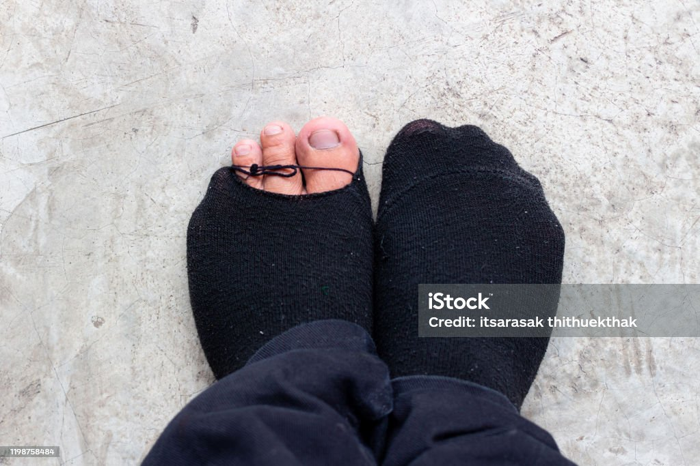
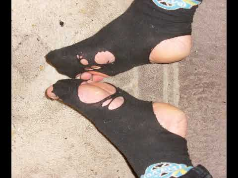

Мало, хто замислюється над тим, яку роль в чоловічому житті грають шкарпетки.
Насправді ця недорога річ (хоча в окремих відомствах збройних сил нашої Неньки по документах вони проходять в ціні 370 грн за пару) в деяких випадках справді рятує нас.
Шкарпетки, залежно від типу, стану та завдань можна:
- Дарувати чолововікам на День захисника України, разом з пінкою для гоління та кружкою, а можливо і на всі інші свята;
- Не тільки носити, а й вішати, класти, іноді навіть ставити;
- Кидати у ворога або сбивати павутиння під стелею та квадрокоптери за принципом бумерангу;
- Рубати дрова, тощо.
Але не кожен може бути "Гуру" у опануванні всіх можливих спектрів вибору, володіння та використання шкарпеток.
Щоб нарешті втілити свою мрію в життя та стати таким тобі насамперед потрібно знати наступне:
3 основні стадії зношеності шкарпеток:
1 стадія зношеності шкарпеток - коли нігті на ногах можна підстригти не знімаючи шкарпетки.
2 стадія зношеності шкарпеток - коли можна почухати п'ятку не знімаючи шкарпеток.
3 стадія зношеності шкарпеток - коли можна помити стопи не знімаючи шкарпеток.